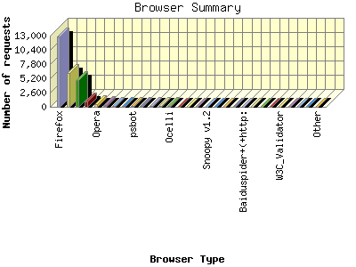
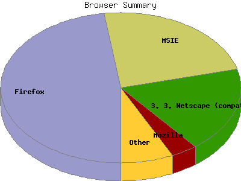

Report generated by Analog 6.0 and Report Magic 2.21
|
Web Server Statistics for "Harish Narayanan (hnarayan) - July 2007" Report generated by Analog 6.0 and Report Magic 2.21 |
The Browser Summary identifies the most popular web browsers used to visit
this site.
Browsers are broken down by recognized categories such as
Netscape Navigator/Communicator, Microsoft Internet Explorer, WebTV, Opera
and the like. Within each category is also a subgroup by version number
such as 'MSIE 5.0' or 'Netscape 4.5'.
This report shows all results. This report is sorted by number of requests.


| Browser Type | Number of requests | Number of bytes transferred | Percentage of the bytes | Percentage of the requests | |
|---|---|---|---|---|---|
| 1. | Firefox | 12,833 | 169.019 MB | 12.67% | 47.79% |
| Firefox/2 | 10,770 | 143.442 MB | 10.75% | 40.11% | |
| Firefox/1 | 2,063 | 25.578 MB | 1.92% | 7.68% | |
| 2. | MSIE | 6,236 | 135.176 MB | 10.13% | 23.22% |
| MSIE/6 | 3,667 | 94.494 MB | 7.08% | 13.66% | |
| MSIE/7 | 2,532 | 37.558 MB | 2.82% | 9.43% | |
| MSIE/5 | 37 | 3.125 MB | 0.23% | 0.14% | |
| 3. | Netscape (compatible) | 4,922 | 899.571 MB | 67.44% | 18.33% |
| 4. | Mozilla | 943 | 13.911 MB | 1.04% | 3.51% |
| Mozilla/1 | 868 | 5.654 MB | 0.42% | 3.23% | |
| 5. | Opera | 480 | 5.574 MB | 0.42% | 1.79% |
| Opera/9 | 464 | 5.456 MB | 0.41% | 1.73% | |
| Opera/8 | 2 | 96.298 KB | 0.01% | 0.01% | |
| Opera/7 | 14 | 24.069 KB | 0.00% | 0.05% | |
| 6. | Safari | 274 | 3.171 MB | 0.24% | 1.02% |
| Safari/419 | 246 | 3.060 MB | 0.23% | 0.92% | |
| Safari/522 | 28 | 113.894 KB | 0.01% | 0.10% | |
| 7. | Konqueror | 214 | 1.898 MB | 0.14% | 0.80% |
| Konqueror/3 | 214 | 1.898 MB | 0.14% | 0.80% | |
| 8. | Googlebot-Image | 207 | 10.342 MB | 0.78% | 0.77% |
| 9. | psbot | 164 | 6.019 MB | 0.45% | 0.61% |
| psbot/0 | 164 | 6.019 MB | 0.45% | 0.61% | |
| 10. | msnbot | 159 | 53.628 MB | 4.02% | 0.59% |
| msnbot/1 | 159 | 53.628 MB | 4.02% | 0.59% | |
| 11. | Netscape | 105 | 22.242 MB | 1.67% | 0.39% |
| Netscape/7 | 105 | 22.242 MB | 1.67% | 0.39% | |
| 12. | msnbot-media | 101 | 4.020 MB | 0.30% | 0.38% |
| msnbot-media/1 | 101 | 4.020 MB | 0.30% | 0.38% | |
| 13. | Ocelli | 82 | 7.900 MB | 0.59% | 0.30% |
| Ocelli/1 | 82 | 7.900 MB | 0.59% | 0.30% | |
| 14. | Jyxobot | 19 | 341.997 KB | 0.03% | 0.07% |
| Jyxobot/1 | 19 | 341.997 KB | 0.03% | 0.07% | |
| 15. | bot | 17 | 296.193 KB | 0.02% | 0.06% |
| bot/1 | 17 | 296.193 KB | 0.02% | 0.06% | |
| 16. | MOT-V3i | 16 | 114.045 KB | 0.01% | 0.06% |
| MOT-V3i/08 | 16 | 114.045 KB | 0.01% | 0.06% | |
| 17. | Snoopy v1.2 | 14 | 226.878 KB | 0.02% | 0.05% |
| 18. | WordPress | 6 | 78.880 KB | 0.01% | 0.02% |
| WordPress/2 | 4 | 11.217 KB | 0.00% | 0.01% | |
| WordPress/MU | 2 | 67.663 KB | 0.01% | 0.01% | |
| 19. | envolk | 6 | 10.922 KB | 0.00% | 0.02% |
| envolk/1 | 6 | 10.922 KB | 0.00% | 0.02% | |
| 20. | libwww-perl | 5 | 53.973 KB | 0.00% | 0.02% |
| libwww-perl/5 | 5 | 53.973 KB | 0.00% | 0.02% | |
| 21. | Baiduspider+(+http: | 5 | 31.176 KB | 0.00% | 0.02% |
| Baiduspider+(+http://www | 5 | 31.176 KB | 0.00% | 0.02% | |
| 22. | Wget | 4 | 7.481 KB | 0.00% | 0.01% |
| Wget/1 | 4 | 7.481 KB | 0.00% | 0.01% | |
| 23. | ia_archiver | 4 | 27.379 KB | 0.00% | 0.01% |
| 24. | SiteBar | 3 | 11.417 KB | 0.00% | 0.01% |
| SiteBar/3 | 3 | 11.417 KB | 0.00% | 0.01% | |
| 25. | W3C_Validator | 3 | 10.791 KB | 0.00% | 0.01% |
| W3C_Validator/1 | 3 | 10.791 KB | 0.00% | 0.01% | |
| 26. | MJ12bot | 3 | 22.302 KB | 0.00% | 0.01% |
| MJ12bot/v1 | 3 | 22.302 KB | 0.00% | 0.01% | |
| 27. | MSNPTC | 3 | 22.017 KB | 0.00% | 0.01% |
| MSNPTC/1 | 3 | 22.017 KB | 0.00% | 0.01% | |
| 28. | link_checker | 2 | 1.820 KB | 0.00% | 0.01% |
| link_checker/1 | 2 | 1.820 KB | 0.00% | 0.01% | |
| 29. | RedBot | 2 | 3.641 KB | 0.00% | 0.01% |
| RedBot/redbot-1 | 2 | 3.641 KB | 0.00% | 0.01% | |
| 30. | Jigsaw | 2 | 4.137 KB | 0.00% | 0.01% |
| Jigsaw/2 | 2 | 4.137 KB | 0.00% | 0.01% | |
| 31. | Speedy Spider (http: | 2 | 3.641 KB | 0.00% | 0.01% |
| Speedy Spider (http://www | 2 | 3.641 KB | 0.00% | 0.01% | |
| 32. | Nutch | 1 | 1.820 KB | 0.00% | 0.00% |
| Nutch/Nutch-0 | 1 | 1.820 KB | 0.00% | 0.00% | |
| 33. | wectarbot | 1 | 7.339 KB | 0.00% | 0.00% |
| 34. | NutchCVS (Nutch; http: | 1 | 7.339 KB | 0.00% | 0.00% |
| NutchCVS (Nutch; http://lucene | 1 | 7.339 KB | 0.00% | 0.00% | |
| 35. | Bloodhound | 1 | 1.820 KB | 0.00% | 0.00% |
| Bloodhound/Nutch-0 | 1 | 1.820 KB | 0.00% | 0.00% | |
| 36. | Wells Search II | 1 | 1.820 KB | 0.00% | 0.00% |
| 37. | WebAlta Crawler | 1 | 1.820 KB | 0.00% | 0.00% |
| WebAlta Crawler/1 | 1 | 1.820 KB | 0.00% | 0.00% | |
| 38. | BlogRangerCrawler | 1 | 5.680 KB | 0.00% | 0.00% |
| BlogRangerCrawler/1 | 1 | 5.680 KB | 0.00% | 0.00% | |
| 39. | FAST Enterprise Crawler 6 | 1 | 0.000 B | 0.00% | 0.00% |
| 40. | Yahoo-MMCrawler | 1 | 0.000 B | 0.00% | 0.00% |
| 41. | Python-urllib | 1 | 20.628 KB | 0.00% | 0.00% |
| Python-urllib/1 | 1 | 20.628 KB | 0.00% | 0.00% | |
| 42. | Poacher | 1 | 11.579 KB | 0.00% | 0.00% |
| Poacher/0 | 1 | 11.579 KB | 0.00% | 0.00% | |
| 43. | great-plains-web-spider | 1 | 7.611 KB | 0.00% | 0.00% |
| great-plains-web-spider/gpws | 1 | 7.611 KB | 0.00% | 0.00% | |
| 44. | Lynx | 1 | 63.101 KB | 0.01% | 0.00% |
| 45. | Yeti | 1 | 7.339 KB | 0.00% | 0.00% |
| Yeti/0 | 1 | 7.339 KB | 0.00% | 0.00% | |
| 46. | Xenu Link Sleuth 1.2i | 1 | 0.000 B | 0.00% | 0.00% |
| 47. | ConveraCrawler | 1 | 10.881 KB | 0.00% | 0.00% |
| ConveraCrawler/0 | 1 | 10.881 KB | 0.00% | 0.00% | |
This report was generated on August 3, 2007 10:04.
Report time frame July 1, 2007 00:07 to July 31, 2007 23:50.
| Web statistics report produced by: | |
 Analog 6.0 Analog 6.0 |  Report Magic 2.21 Report Magic 2.21 |